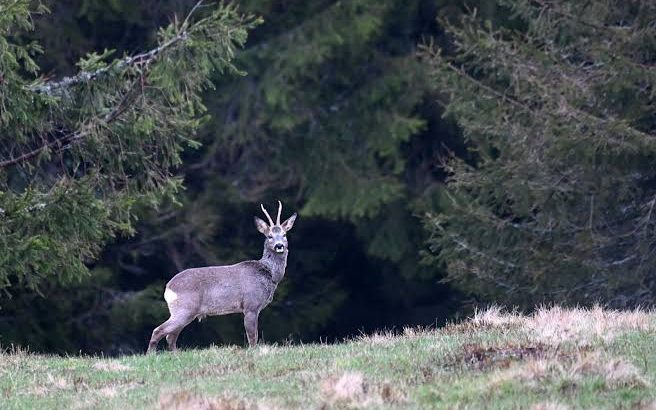
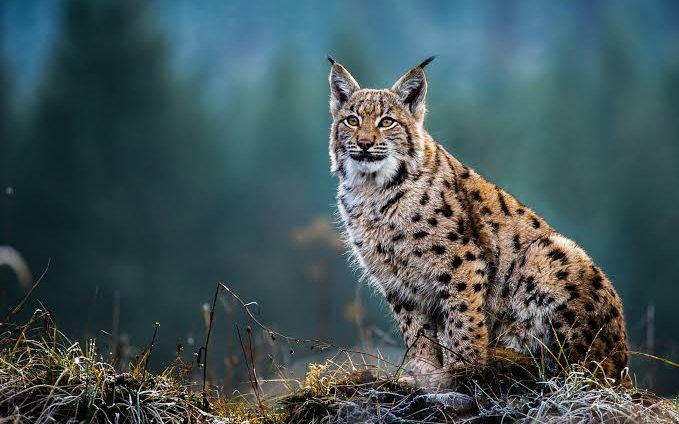
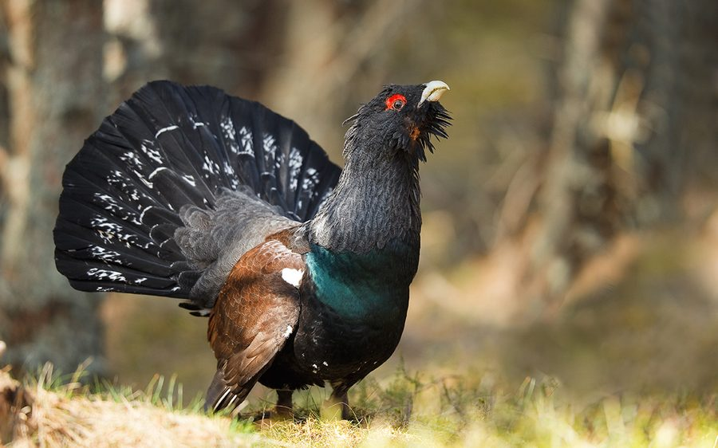
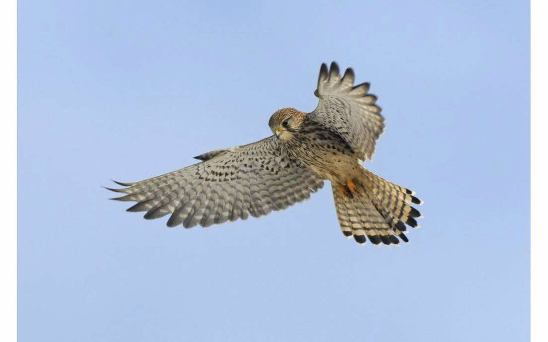
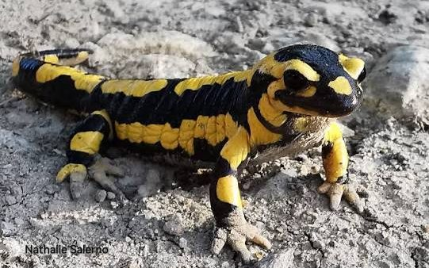
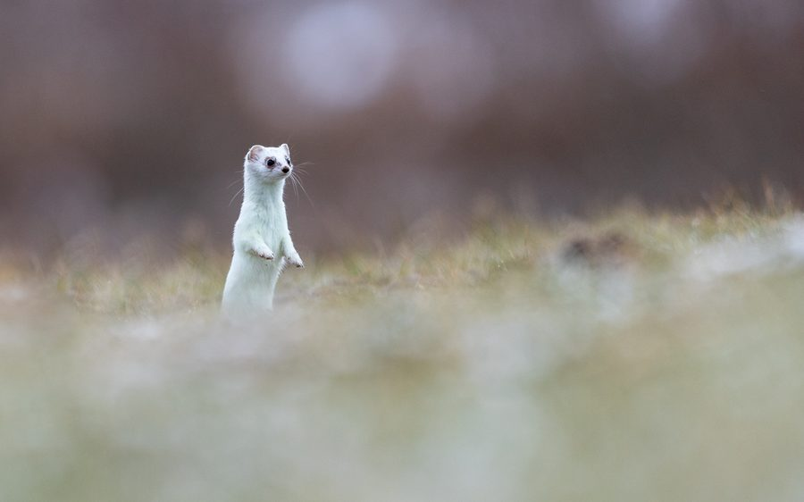
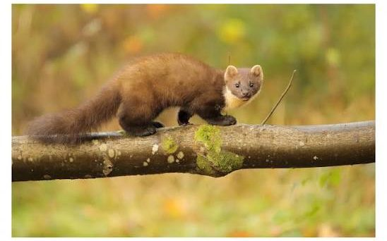

Chamois Rupicapra rupicapra
L'embleme du massif. Introduit en 1956, on en compte plus de 1200 aujourd'hui, surtout autour du Hohneck.
Souvent vuCretes & chaumes
👆 Lire la fiche
Cerf elaphe Cervus elaphus
Le plus grand mammifere sauvage de France. Discret, il sort en lisiere au crepuscule.
A l'aube/crepusculeLisieres de foret
👆 Lire la fiche

Chevreuil Capreolus capreolus
Plus petit et plus commun que le cerf. Se laisse parfois voir dans les pres en lisiere.
Assez frequentClairieres
👆 Lire la fiche
Sanglier Sus scrofa
Surtout nocturne et tres discret ; on repere plutot ses traces et le sol retourne.
Traces surtoutSous-bois
👆 Lire la fiche
Renard roux Vulpes vulpes
Ruse et adaptable, present partout, jusque sur les chaumes.
PossiblePartout
👆 Lire la fiche

Lynx boreal Lynx lynx
Reintroduit, tres rare et furtif. Le seul grand felin sauvage du massif.
Tres rareGrandes forets
👆 Lire la fiche
Marmotte Marmota marmota
Presente localement sur certaines pentes ouvertes. Trahit sa presence par un sifflement.
SifflementPentes ouvertes
👆 Lire la fiche
Ecureuil roux Sciurus vulgaris
Vif et acrobate dans les sapins et hetres. Facile a reperer pour les enfants.
Souvent vuForets
👆 Lire la fiche

Grand Tetras Tetrao urogallus
Le symbole du massif, helas devenu rarissime et tres fragile. A ne surtout pas deranger.
RarissimeVieilles forets
👆 Lire la fiche
Grand Corbeau Corvus corax
De retour depuis les annees 2000. Grand oiseau noir au croassement grave.
Souvent entenduZones escarpees
👆 Lire la fiche
Faucon pelerin Falco peregrinus
Revenu depuis les annees 1970. L'animal le plus rapide du monde en pique.
En volFalaises
👆 Lire la fiche

Faucon crecerelle Falco tinnunculus
Petit rapace commun. Fait du surplace au-dessus des chaumes pour chasser.
Vol sur placeChaumes
👆 Lire la fiche
Mesange bleue Cyanistes caeruleus
Mesange bleue, charbonniere, huppee... animation garantie dans les sapinieres.
Tres frequentForets
👆 Lire la fiche
Pipit farlouse Anthus pratensis
Petit passereau typique des hautes-chaumes ouvertes.
Sur les chaumesHautes-chaumes
👆 Lire la fiche

Salamandre tachetee Salamandra salamandra
Noire a taches jaunes, sort par temps humide pres des ruisseaux.
Apres la pluieSous-bois humides
👆 Lire la fiche
Triton alpestre Ichthyosaura alpestris
Autour des lacs (Schiessrothried, Fischboedle) et des tourbieres.
Pres des lacsLacs & tourbieres
👆 Lire la fiche

Hermine Mustela erminea
Petit carnivore vif, brun l'ete, tout blanc l'hiver.
FurtiveChaumes
👆 Lire la fiche

Martre des pins Martes martes
Discrete, arboricole, bavette creme sur la gorge.
DiscreteForets
👆 Lire la fiche
Vache vosgienne race locale
Pas sauvage, mais vous en croiserez surement : robe pie-noir, en liberte sur les chaumes.
GarantiHautes-chaumes
👆 Lire la fiche
📚 Pour aller plus loin
Sources : Vosges Tourisme, VosgesQuiPeut, Parc naturel régional des Ballons des Vosges (« Quiétude attitude »). Photos : Wikipédia. En cas de besoin en montagne : 112.